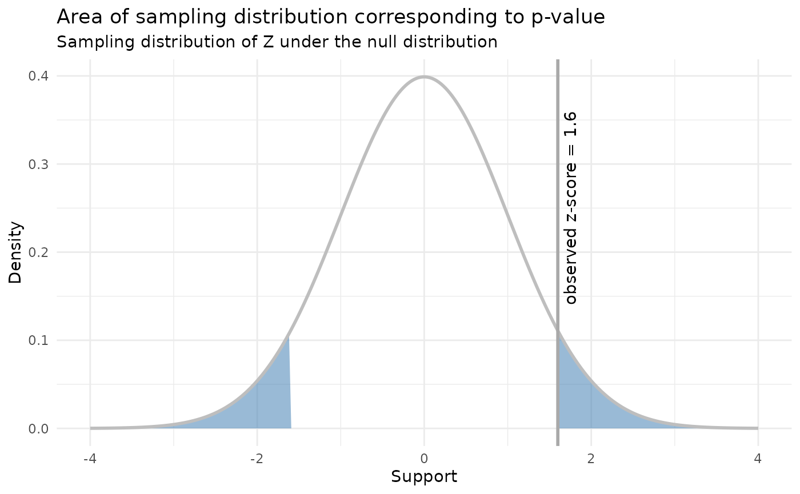

Intro to hypothesis testing
Source:vignettes/intro-to-hypothesis-testing.Rmd
intro-to-hypothesis-testing.RmdHypothesis testing is all about answering the question: for a parameter \(\theta\), is a parameter value of \(\theta_0\) consistent with the data in our observed sample?
We call this is the null hypothesis and write
\[ H_0 : \theta = \theta_0 \]
where this means that true (population) value of a parameter \(\theta\) is equal to some value \(\theta_0\).
What do we do next? We assume that \(\theta = \theta_0\) in the population, and then check if this assumption is compatible with our observed data. The population with \(\theta = \theta_0\) corresponds to a probability distribution, which we call the null distribution.
Let’s make this concrete. Suppose that we observe data \(2, 3, 7\) and we know that our data comes from a normal distribution with known variance \(\sigma^2 = 2\). Realistically, we won’t know \(\sigma^2\), or that our data is normal, but we’ll work with these assumptions for now and relax them later.
Let’s suppose we’re interested in the population mean. Let’s guess that the population mean is 8. In this case we would write the null hypothesis as \(H_0 : \mu = 8\). This is a ridiculous guess for the population mean given our data, but it’ll illustrate our point. Our null distribution is then \(\mathrm{Normal}(8, 2)\).
Now that we have a null distribution, we need to dream up a test statistic. In this class, you’ll always be given a test statistic. For now we’ll use the T statistic.
\[ Z = {\bar x - \mu_0 \over \mathrm{se}\left(\bar x \right)} = {\bar x - \mu_0 \over {\sigma \over \sqrt n}} = {4 \over \sqrt \frac 23} \approx 4.9 \]
Recall: a statistic \(T(X)\) is a function from a random sample into the real line. Since statistics are functions of random samples, they are themselves random variables.
Test statistics are chosen to have two important properties:
- They need to relate to the population parameter we’re interested in measuring
- We need to know their sampling distributions
Sampling distributions you say! Why do test statistics have sampling distributions? Because we’re just taking a function of a random sample.
For this example, we know that
\[ Z \sim \mathrm{Normal}(0, 1) \]
and now we ask how probable is this statistic given that we have assumed that null distribution is true.
The idea is that if this number is very small, then our null distribution can’t be correct: we shouldn’t observe highly unlikely statistics. This means that hypothesis testing is a form of falsification testing.

For the example above, we are interested in the probability of observing a more extreme test statistic given the null distribution, which in this case is:
\[ P(|Z| > 4.9) = P(Z < -4.9) + P(Z > 4.9) \approx 9.6 \cdot 10^{-7} \]
This probability is called a p-value. Since it’s very small, we conclude that the null hypothesis is not realistic. In other words, the population mean is statistically distinguishable from 8 (whether or not it is practically distinguishable from 8 is entirely another matter).
This is the just of hypothesis testing. Of course there’s a bunch of other associated nonsense that obscures the basic idea, which we’ll dive into next.
Things that can go wrong
False positives
We need to be concerned about rejecting the null hypothesis when the null hypothesis is true. This is called a false positive or a Type I error.
If the null hypothesis is true, and we calculate a statistic like we did above, we still expect to see a value of p-value of \(9.6 \cdot 10^{-7}\) about \(9.6 \cdot 10^{-5}\) percent of the time. For small p-values this isn’t an issue, but let’s consider a different null hypothesis of \(\mu_0 = 3.9\). Now
\[ Z = {\bar x - \mu_0 \over {\sigma \over \sqrt n}} = {4 - 3.9 \over \sqrt \frac 23} \approx 0.12 \]
and our corresponding p-value is
\[ P(|Z| > 0.12) = P(Z < -0.12) + P(Z > 0.12) \approx 0.9 \]
and we see that this is quite probable! We should definitely not reject the null hypothesis!
This leads us to a new question: when should we reject the null hypothesis? A standard choice is to set an acceptable probability for a false positive \(\alpha\). One arbitrary but common choice is to set \(\alpha = 0.05\), which means we are okay with a \({1 \over 20}\) chance of a false positive. We should then reject the null hypothesis when the p-value is less than \(\alpha\). This is often called “rejecting the null hypothesis at significance level \(\alpha\)”. More formally, we might write
\[ P(\text{reject} \; H_0 | H_0 \; \text{true}) = \alpha \]
False negatives
On the other hand, we may also fail to reject the null hypothesis when the null hypothesis is in fact false. We might just not have enough data to reject the null, for example. We call this a false negative or a Type II error. We write this as
\[ \text{Power} = P(\text{fail to reject} \; H_0 | H_0 \; \text{false}) = 1 - \beta \]
To achieve a power of \(1 - \beta\) for a one sample Z-test, you need
\[ n \approx \left( { \sigma \cdot (z_{\alpha / 2} + z_\beta) \over \mu_0 - \mu_A } \right)^2 \]
where \(\mu_A\) is the true mean and \(\mu_0\) is the proposed mean. We’ll do an exercise later that will help you see where this comes from.
Examples
Z-test
A company claims battery lifetimes are normally distributed with \(\mu = 40\) and \(\sigma = 5\) hours. We are curious if the claim about the mean is reasonable, and collect a random sample of 100 batteries. The sample mean is 39.8. What is the p-value of a Z-test for \(H_0 : \mu = 40\)?
We begin by calculating a Z-score
\[ Z = {\bar x - \mu_0 \over {\sigma \over \sqrt n}} = {39.8 - 40 \over {5 \over \sqrt 100}} = 0.4 \]
and then we calculate, using the fact that \(Z \sim \mathrm{Normal}(0, 1)\),
\[ P(Z < -0.4) + P(Z > 0.4) \approx 0.69 \]
we might also be interested in a one-sided test, where \(H_A : \mu < 40\). In this case the p-value is only the case when \(Z < -0.4\), and the p-value is
\[ P(Z < -0.4) \approx 0.34 \]
Power for Z-test
Suppose a powdered medicine is supposed to have a mean particle diameter of \(\mu = 15\) micrometers, and the standard deviation of diameters stays steady around 1.8 micrometers. The company would like to have high power to detect mean thicknesses 0.2 micrometers away from 15. When \(n = 100\), what is the power of the test if the true \(\mu\) is 15.2 micrometers. Assume the company is interested in controlling type I error at an \(\alpha = 0.05\) level.
We will reject the null when our Z score is less than \(z_{\alpha / 2}\) or \(z_{1 - \alpha / 2}\), or when the Z score is less than -1.96 or greater than 1.96. Recall that the Z score is \({\bar x - \mu_0 \over {\sigma \over \sqrt n}}\), which we can rearrange in terms of \(\bar x\) to see that we will reject the null when \(\bar x < 14.65\) or \(\bar x > 15.35\).
Now we are interested in the probability of being in this rejection region when the alternative hypothesis \(\mu_A = 15.2\) is true.
\[ P(\bar x > 15.35 | \mu = 15.2) + P(\bar x < 14.65 | \mu = 15.2) \]
and we know that \(\bar x \sim \mathrm{Normal} \left(15.2, 1.8 / \sqrt{100}\right)\) so this equals
\[ 0.001 + 0.198 \approx 0.199 \]
So we have only a power of about 20 percent. This is quite low.